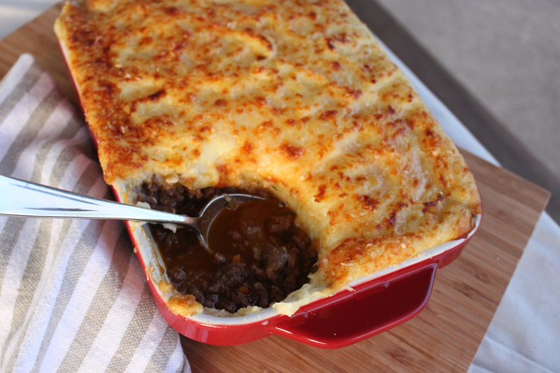

Shepherds Pie

Gordon Ramsay's Authentic Shepherds Pie
Yum. Shepherds pIe always looks liek shit on a plate but tastses good if you make it with lamb proably
Ingredients
- 2 tbsp olive oil
- 2 lbs ground lamb
- 1 lg Onion
- 1 lg carrot
- 2 cloves garlic
- 2 tbsp worcestershire sauce
- 1.5 tbsp tomato paste
- 2 sprigs fresh thyme leaves
- 1 sprig fresh rosemare
- 1 cup red wine
- 1 cup chiken stock
- 2.5lbs potatoes
- 2 egg yolks
- 1/4 cup cream
- 4 tbsp butter
- 6 tbsp parmesan cheese
Steps
- Preaheat oven to 350 degrees
- Heat oil in large pan until hot
- Season ground lamb and fry in oil over moderate to high heat for 2-3 minutes
- Stir onions and carrot into mince then grate in the garlic
- Add worcestershire sauce tomato paste and herbs and cook for 1-2 minutes, stirring constantly
- Pour in red wine and reduce until almost evaporated
- Add in chicken stock and bring to boil, reduce to simmer until sauce has thickened. Add salt and pepper to taste. Meanwhile cook potatoes in boiling salted water until tender.
- Drain potatoes and return to the hot pan over low heat to dry out briefly
- Pass them through a potato ricer then beat in the egg yolks, cream and butter, followed by about 2 tbsp grated parmesan. Check for seasoning
- Spoon lamb mixture into bottom of ovenproof dish
- Using a large spoon layer the mashed potato on top of lamb mixture, starting from outside and working way into the middle
- Top with remaining parmesan and season
- Fluff up mashed potato with fork to make rough peaks
- Bake in oven for approx 20 minutes until bubbling and golden brown